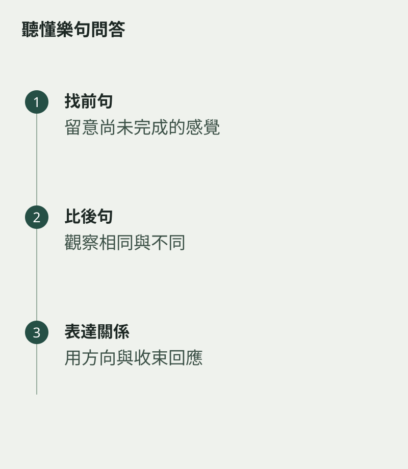

一段旋律結束時，你是否覺得它還在等待下文？下一句出現後，又像終於說完。把樂句想成問答，是認識音樂結構的一個入口。它不是所有作品都適用的固定公式，但能幫助初學者聽見前後句的關係。
先選一首短而熟悉的曲，唱出前半段，在自然停頓處停下。留意是否有尚未落定的感覺，再接後半段，比較兩個結尾。
從相同與不同開始
兩句可能用相似節奏開始，卻走向不同音高；也可能第一句較短，第二句延伸得更遠。把可聽見的差異寫下來，比立即套用很複雜的分析名詞更有用。
在樂譜上畫出句子範圍，確認換氣或停頓是否配合。若每兩小節便機械吸一次氣，有時會把原本連續的句子切開，需要按旋律重新安排。

演奏時讓回答被聽見
不一定要把第二句吹得更大聲。可以透過方向、末音處理或適當的力度差別，讓它與前一句產生關係。先唱出想法，再用樂器實現，往往較自然。
請一位伙伴不看譜聽你演奏，說說他在哪裏感到停頓或完成。要看的，是你的分句能否傳達；對錯不在這一次的範圍。當音樂不再只是相同長度的小格子，旋律便開始有了呼應，也有了值得等待的下文。